Image credits
Images come from Wikimedia Commons and are used under their individual licenses; author and license follow the file page. The "Taken" date under an image is the year or date of photography recorded on the file page; where there is none, the file page does not record it or it has not been checked yet. Externally linked images have unclear copyright, so only links are given and the images are not hosted on this site.
| Place | Image | Author | License | Source |
|---|---|---|---|---|
| Albertina Museum |  Photo from 2021-08-16 |
C.Stadler/Bwag | CC BY-SA 4.0 | File page |
| Altaussee lake loop (can add the Gaisknechtstein viewpoint) |  Photo from 2022-10-16 |
Carsten Steger | CC BY-SA 4.0 | File page |
| Altaussee lake loop (can add the Gaisknechtstein viewpoint) (2nd photo) | 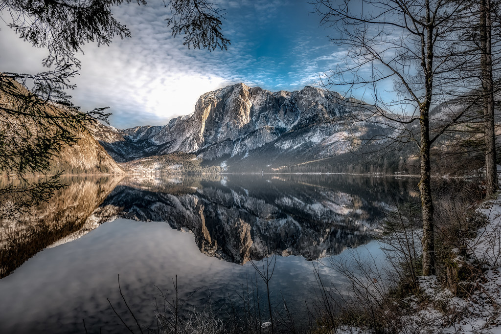 Photo from 2018-12-27 |
Bernd Thaller | CC BY 2.0 | File page |
| Altaussee lake loop (can add the Gaisknechtstein viewpoint) (3rd photo) | 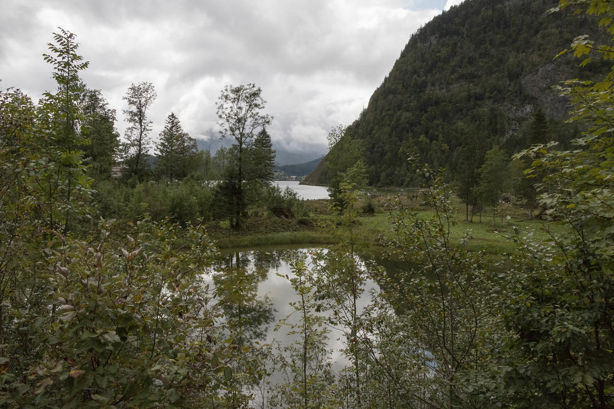 Photo from 2018-09-04 |
Alexander Slabihoud | CC BY 2.0 | File page |
| Walk from Bad Ischl to Altaussee (trail 7, via Rettenbachalm and Blaa-Alm) |  Photo from 2019-04-21 |
Hannes Flo from Austria | CC BY 2.0 | File page |
| Andrássy Avenue and Heroes' Square (ride the old M1 metro) |  Photo from 2024-08-22 |
FrogsLegs71 | CC BY-SA 3.0 | File page |
| Weißenbach – Nixenfall (south end of Attersee, easy on AllTrails) |  Photo from 2020-08-09 |
AtterseeMM | CC BY-SA 4.0 | File page |
| Lower Belvedere |  Photo from 2022-01-06 |
Sandor_Somkuti | CC BY-SA 2.0 | File page |
| Upper Belvedere (Klimt's The Kiss) |  Photo from 2018-04-21 |
C.Stadler/Bwag | CC BY-SA 4.0 | File page |
| Upper Belvedere (Klimt's The Kiss) (photo 2) | 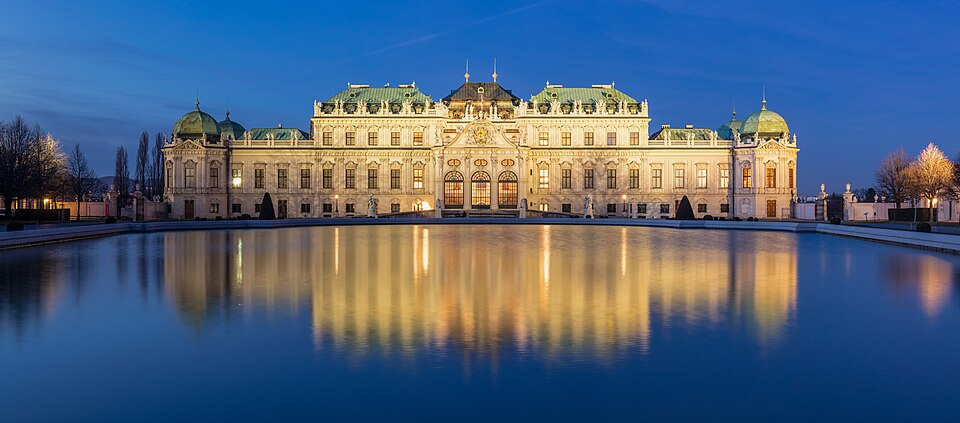 Photo from 2020-02-01 |
Diego Delso | CC BY-SA 4.0 | File page |
| Upper Belvedere (Klimt's The Kiss) (photo 3) | 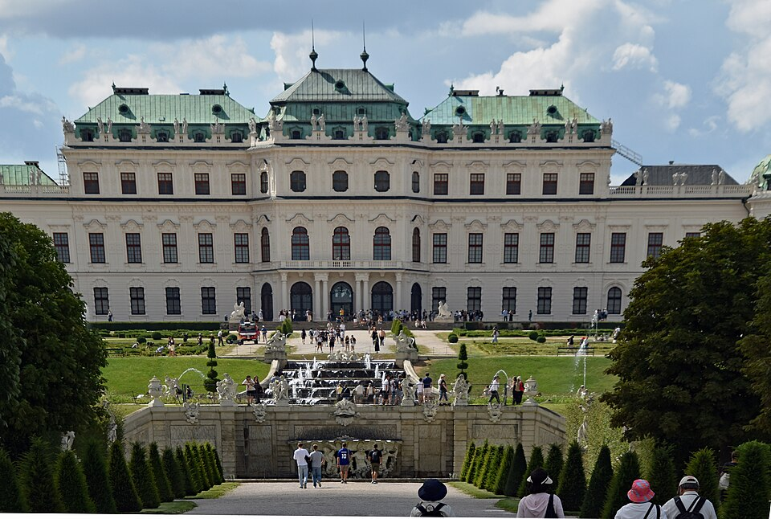 Photo from 2026-07-22 |
Thomas Dahlstrøm Nielsen | CC BY 4.0 | File page |
| Blockfabrik bouldering gym |  Photo from 2023-05-15 |
Andrzej Otrębski | CC BY-SA 4.0 | File page |
| Bräugasthof (long-established lakeside restaurant in Hallstatt) |  Photo from 2022-05-28 |
Werner100359 | CC BY-SA 4.0 | File page |
| Brunnwind (small lakeside restaurant in St. Gilgen) |  Photo from 2019-07-14 |
Funke | CC BY-SA 4.0 | File page |
| Buda Castle and Castle District (free elevator down at Várkert Bazár) |  Photo from 2021-04-07 |
VargaA | CC BY-SA 4.0 | File page |
| Buda Castle Labyrinth |  Photo from 2023-07-19 |
MOs810 | CC BY 4.0 | File page |
| Café Gloriette (café in the Gloriette at Schönbrunn) |  Photo from 2025-10-29 |
Iuno3 | CC BY-SA 4.0 | File page |
| Café Sperl (the café from Before Sunrise) |  Photo from 2023-05-22 |
© 1971markus | CC BY-SA 4.0 | File page |
| Café-Konditorei Wallner (old shop in St. Wolfgang) |  Photo from 2019-01-30 |
Ray Swi-hymn from Sijhih-Taipei, Taiwan | CC BY-SA 2.0 | File page |
| Central Market Hall |  Photo from 2021-10-09 |
Balon Greyjoy | CC0 | File page |
| Chen's Ramen | External link | Unknown | Unknown | File page |
| Danube Island Copa Beach riverside walk |  Photo from 2026-08-12 |
CBJH | CC0 | File page |
| Dachstein Giant Ice Cave (Rieseneishöhle, with the Mammoth Cave) |  Photo from 2021-09-18 |
Tigerente | CC BY-SA 4.0 | File page |
| Danube night cruise (booked and paid) |  Photo from 2018-02-15 |
Florian Fèvre | CC BY-SA 4.0 | File page |
| Chain Bridge and Pest riverside night walk |  Photo from 2024-11-22 |
Jorge Franganillo | CC BY 2.0 | File page |
| Demel (Kaiserschmarrn) |  Photo from 2025-01-31 |
Sandor Somkuti from Wien, Österreich | CC BY-SA 2.0 | File page |
| Synagogue (Dohány Street Synagogue) |  Photo from 2023-03-18 |
Daniel from Glasgow, United Kingdom | CC BY 2.0 | File page |
| Dorf-Alm zu St. Wolfgang | External link | Unknown | Unknown | File page |
| Hallstatt Echerntal gorge to the Waldbachstrub waterfall (round trip) |  Photo from 2023-05-26 |
Rakoon | CC0 | File page |
| EurothermenResort thermal baths (saline) |  Photo from 2012-07-24 |
Maester Aemon | CC BY-SA 3.0 | File page |
| Figlmüller schnitzel |  Photo from 2024-07-25 |
TravelPhotosNL | CC BY-SA 4.0 | File page |
| Fisherman's Bastion |  Photo from 2026-09-26 |
Yair-haklai | CC BY-SA 4.0 | File page |
| Fisherman's Bastion (photo 2) | 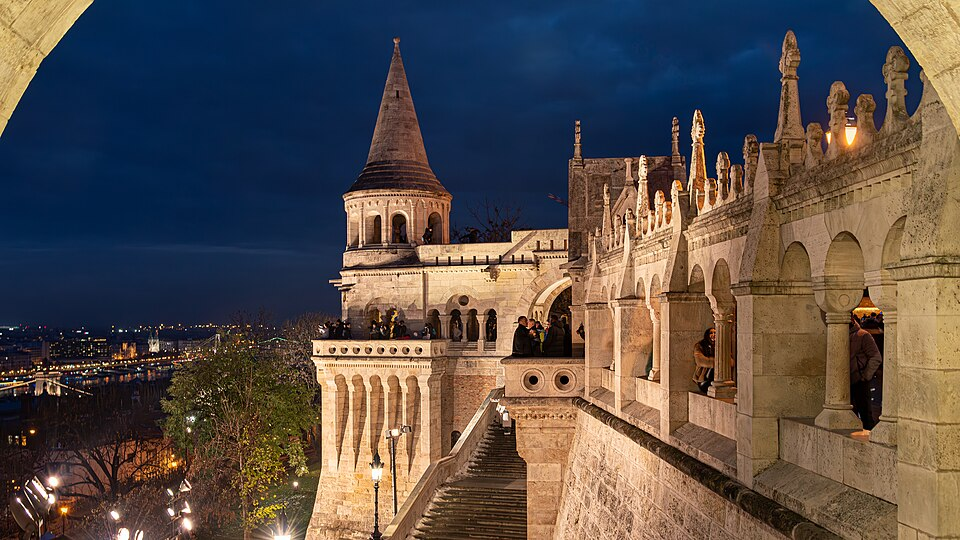 Photo from 2024-11-24 |
Jorge Franganillo | CC BY 2.0 | File page |
| Fisherman's Bastion (photo 3) | 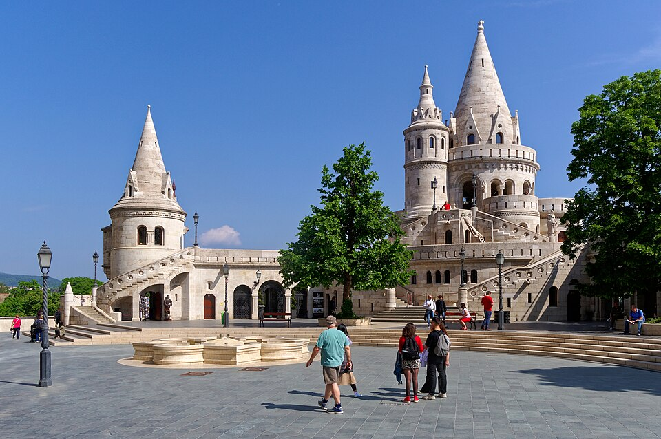 Photo from 2019-05-02 |
Jakub Hałun | CC BY-SA 4.0 | File page |
| For Sale Pub (Hungarian pub opposite the Central Market Hall) | External link | Unknown | Unknown | File page |
| Fürberg → St. Gilgen lakeshore path (Uferweg 19) |  Photo from 2026-03-08 |
Linie29 | CC BY-SA 4.0 | File page |
| Fuschlsee lake loop |  Photo from 2022-10-16 |
Carsten Steger | CC BY-SA 4.0 | File page |
| Gardekirche (Polish Church, Rennweg) |  Photo from 2018-05-13 |
Ricardalovesmonuments | CC BY-SA 3.0 | File page |
| Gasthof Gosausee (restaurant by the front lake) |  Photo from 2019-07-22 |
Funke | CC BY-SA 4.0 | File page |
| Gasthof zur Post (St. Gilgen, since 1330) |  Photo from 2025-08-11 |
Андрей Романенко | CC BY-SA 4.0 | File page |
| Gellért Hill Citadella (Liberty Fortress) |  Photo from 2018-01-18 |
Elekes Andor | CC BY-SA 4.0 | File page |
| Gerbeaud café |  Photo from 2023-05-09 |
Elekes Andor | CC BY-SA 4.0 | File page |
| Gmunden ceramics flea market (10-31, not on the current plan) |  Photo from 2025-08-15 |
C.Stadler/Bwag | CC BY-SA 4.0 | File page |
| Gosau village center (Gemeindeamt, church, Kirchenwirt) |  Photo from 2022-04-22 |
Bernd Thaller from Graz, Austria | CC BY 2.0 | File page |
| Hotel-Restaurant Gosauerhof (near the cable car station) | External link | Unknown | Unknown | File page |
| Gosaukammbahn cable car (Zwieselalm, Gosau) | External link | Unknown | Unknown | File page |
| Gosausee (front lake to back lake) |  Photo from 2022-07-18 |
Nicolas May | CC BY-SA 4.0 | File page |
| Gosausee (front lake to back lake) (photo 2) | 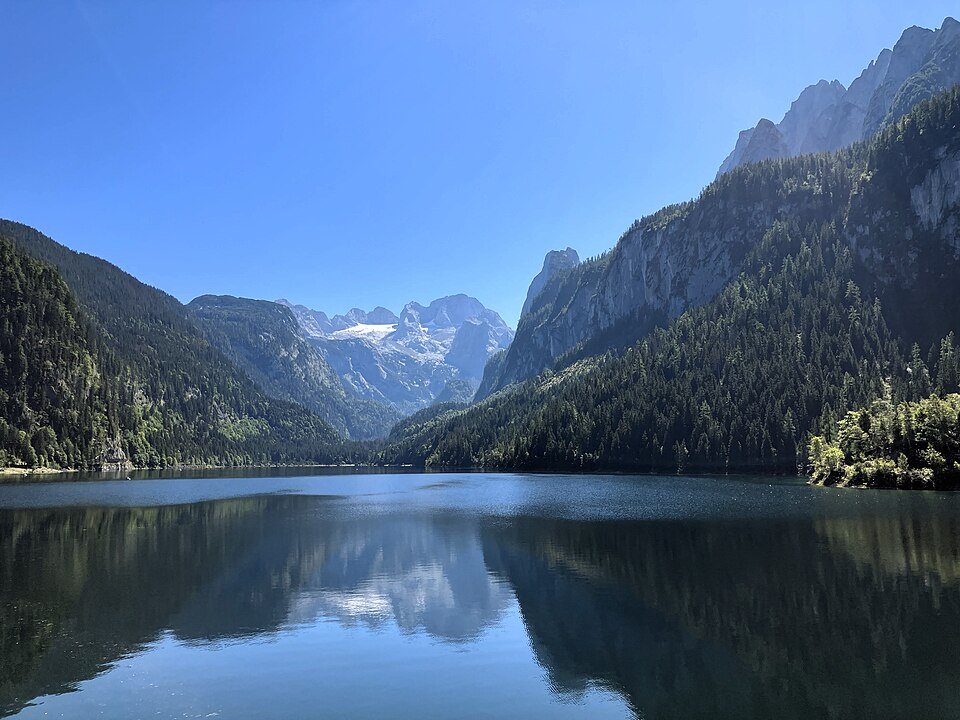 Photo from 2023-09-08 |
Michael Burgholzer | CC BY-SA 4.0 | File page |
| Gosausee (front lake to back lake) (photo 3) | 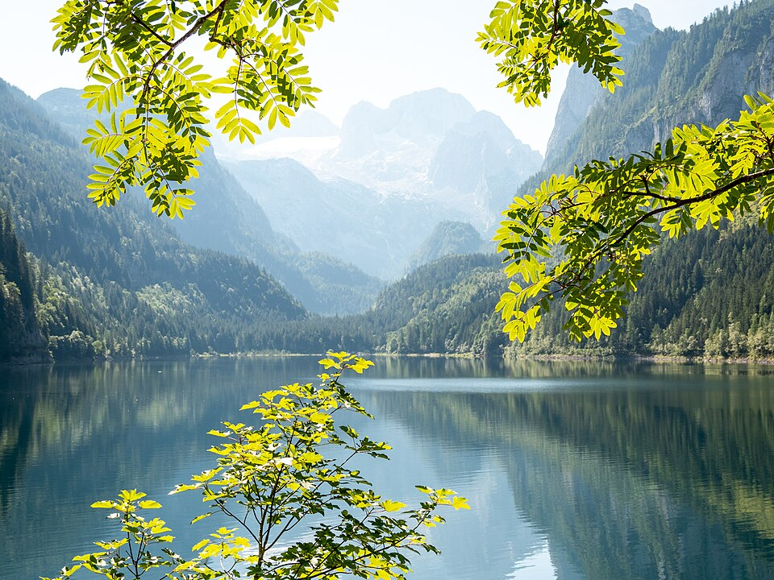 Photo from 2019-08-10 |
Dimitry Anikin | CC0 | File page |
| Gosausee front-lake loop (Dachstein reflection) |  Photo from 2019-08-10 |
Dimitry Anikin | CC0 | File page |
| Old town pedestrian streets and the outside of the Hofburg (Graben, Kohlmarkt, Michaelerplatz) |  Photo from 2018-07-31 |
Fred Romero from Paris, France | CC BY 2.0 | File page |
| Hallstätter See east-shore lakeside path (Steeg → Obertraun) |  Photo from 2021-07-29 |
Mateus2019 | CC BY-SA 3.0 | File page |
| Hallstatt rooftop-view trail and Müllerstiege |  Photo from 2021-07-29 |
Mateus2019 | CC BY-SA 3.0 | File page |
| Hallstatt Skywalk |  Photo from 2019-10-19 |
Bhavishya Goel | CC BY 2.0 | File page |
| Hallstatt town |  Photo from 2019-06-30 |
C.Stadler/Bwag | CC BY-SA 4.0 | File page |
| Hallstatt town (photo 2) | 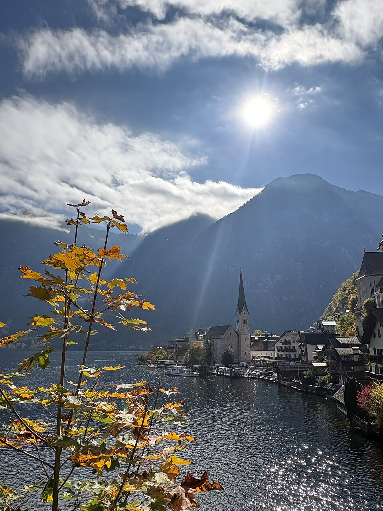 Photo from 2025-10-12 |
Tiroooooler | CC BY-SA 4.0 | File page |
| Hallstatt town (photo 3) | 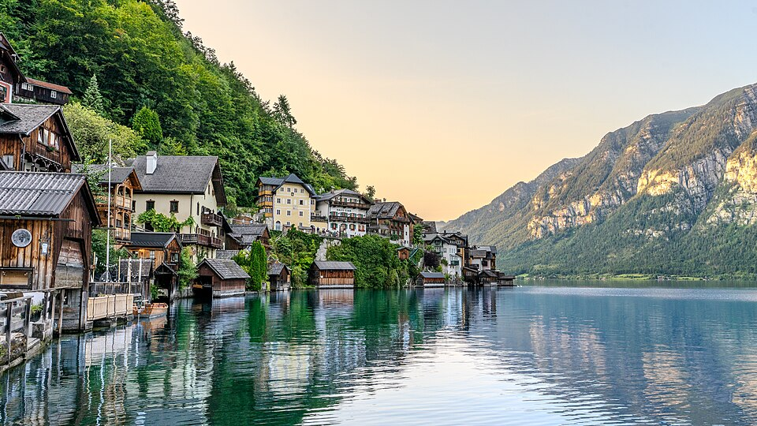 Photo from 2025-08-06 |
David Kernan | CC BY 4.0 | File page |
| House of Music |  Photo from 2020-06-04 |
Agathe Freischütz | CC BY-SA 4.0 | File page |
| Mayer am Pfarrplatz wine tavern |  Photo from 2025-08-16 |
Geolina163 | CC BY-SA 4.0 | File page |
| Hofburg and Sisi Museum |  Photo from 2020-02-14 |
young shanahan | CC BY 2.0 | File page |
| Horgásztanya old restaurant (fish soup, beef stew) | External link | Unknown | Unknown | File page |
| Hospital in the Rock Nuclear Bunker Museum |  Photo from 2018-05-12 |
Hospital in the Rock Marketing | CC BY-SA 4.0 | File page |
| House of Terror |  Photo from 2018-06-15 |
Bex.Walton | CC BY 2.0 | File page |
| Hungarian National Gallery (Buda Castle) |  Photo from 2024-10-13 |
KovacsDaniel | CC BY 4.0 | File page |
| Hungarian National Museum |  Photo from 2024-08-05 |
Dr Korom | CC BY-SA 2.0 | File page |
| Hungarian State Opera (tour) |  Photo from 2025-08-13 |
Christo | CC0 | File page |
| Jagdhaus Seewiese (east end of Altaussee) |  Photo from 2019-07-21 |
Funke | CC BY-SA 4.0 | File page |
| K³ climbing gym (bouldering) | External link | Unknown | Unknown | File page |
| Kaffeewerkstatt (café in St. Wolfgang) | External link | Unknown | Unknown | File page |
| Vienna Woods hike (Nußdorf → Kahlenberg → Leopoldsberg) |  Photo from 2020-09-27 |
Linie29 | CC BY-SA 4.0 | File page |
| Kaiservilla |  Photo from 2026-02-27 |
VitVit | CC BY-SA 4.0 | File page |
| Karlskirche (incl. dome platform) |  Photo from 2020-06-26 |
C.Stadler/Bwag | CC BY-SA 4.0 | File page |
| Karlskirche (incl. dome platform) (photo 2) | 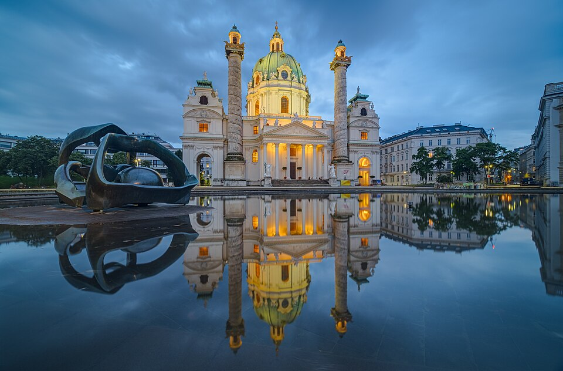 Photo from 2019-07-07 |
Moahim | CC BY-SA 4.0 | File page |
| Karlskirche (incl. dome platform) (photo 3) | 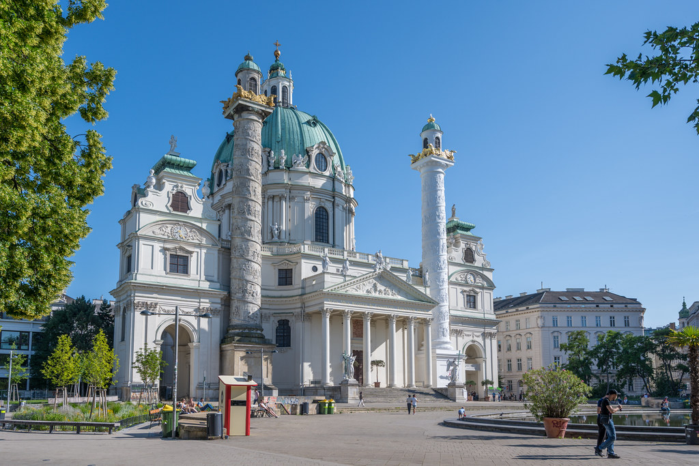 Photo from 2025-06-14 |
Sandor_Somkuti | CC BY-SA 4.0 | File page |
| Katrin mountain (cable car + summit loop) |  Photo from 2026-07-21 |
Linie29 | CC BY 4.0 | File page |
| Hike up Katrin (walk up from the valley station) |  Photo from 2019-07-06 |
H. Raab (User:Vesta) | CC BY-SA 4.0 | File page |
| Kirchenwirt Gosau (in the center of Gosau village) | External link | Unknown | Unknown | File page |
| Krippenstein cable car and 5fingers viewing platform |  Photo from 2026-07-20 |
Mojmir Churavy | CC0 | File page |
| Krippenstein alpine trail (Heilbronner loop → Gjaid) |  Photo from 2026-07-21 |
Mojmir Churavy | CC0 | File page |
| Kunsthistorisches Museum (incl. dome café) |  Photo from 2024-07-10 |
Sandor Somkuti | CC BY-SA 2.0 | File page |
| Lánchíd Söröző (Buda end of Chain Bridge, beef soup, duck leg) | External link | Unknown | Unknown | File page |
| Langbathseen two-lake loop (Ebensee) |  Photo from 2019-10-20 |
laijos | CC BY 4.0 | File page |
| Leopold Museum |  Photo from 2021-06-12 |
Gugerell | CC0 | File page |
| Liberty Bridge |  Photo from 2021-10-09 |
Balon Greyjoy | CC0 | File page |
| MAG47 climbing gym (bouldering) | External link | Unknown | Unknown | File page |
| Matthias Church |  Photo from 2026-09-26 |
Yair-haklai | CC BY-SA 4.0 | File page |
| Matthias Church (photo 2) | 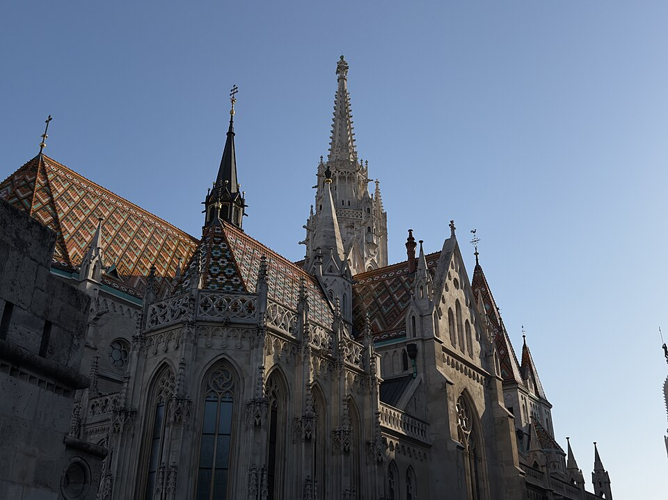 Photo from 2026-08-11 |
Mike is Michi | CC BY-SA 4.0 | File page |
| Matthias Church (photo 3) | 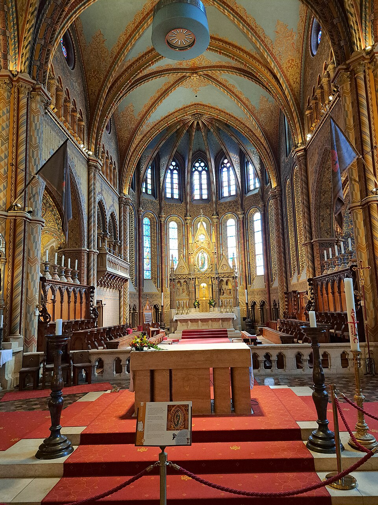 Photo from 2023-04-21 |
Bybbisch94, Christian Gebhardt | CC BY-SA 4.0 | File page |
| Michaelerkirche |  Photo from 2025-04-27 |
Sandor Somkuti from Wien, Österreich | CC BY-SA 2.0 | File page |
| Mozarthaus St. Gilgen (birthplace of Mozart's mother) |  Photo from 2022-10-31 |
Thomas Ledl | CC BY-SA 4.0 | File page |
| Muk's Schmankerl (small shop in Hallstatt) | External link | Unknown | Unknown | File page |
| Museum of Fine Arts, Budapest |  Photo from 2018-12-05 |
MartinThoma | CC0 | File page |
| Naschmarkt and Saturday flea market |  Photo from 2025-03-19 |
Geolina163 | CC BY-SA 4.0 | File page |
| New York Café |  Photo from 2025-01-04 |
Asif Masimov | CC BY 3.0 | File page |
| Nussensee loop (via the ruins of Wildenstein castle) |  Photo from 2026-08-13 |
Tigerente | CC BY 4.0 | File page |
| Öfferl bakery (Landstraßer Hauptstraße branch) | External link | Unknown | Unknown | File page |
| Parliament tour |  Photo from 2018-08-24 |
Suicasmo | CC BY-SA 4.0 | File page |
| Parliament night view from the Buda riverbank (around Bem rakpart / Szilágyi Dezső tér) |  Photo from 2025-01-27 |
Furkan Akkurt | CC BY-SA 4.0 | File page |
| Peterskirche (St. Peter's Church) |  Photo from 2025-04-27 |
Sandor_Somkuti | CC BY-SA 2.0 | File page |
| Lakeside pilgrim path (St. Gilgen → Falkenstein → St. Wolfgang) |  Photo from 2026-06-08 |
Tsungam | CC BY-SA 4.0 | File page |
| National Library hall |  Photo from 2021-02-20 |
BMSTe | CC BY-SA 4.0 | File page |
| Reinthaler's Beisl (traditional Old Town tavern) | External link | Unknown | Unknown | File page |
| Retro Lángos (lángos fried dough) | External link | Unknown | Unknown | File page |
| Ribs of Vienna (roast pork ribs) | External link | Unknown | Unknown | File page |
| Salesianerinnenkirche (Church of the Salesian Sisters, Rennweg) |  Photo from 2021-10-22 |
Wolfgang Sauber | CC BY-SA 4.0 | File page |
| Hallstatt Salt Mine |  Photo from 2022-07-09 |
Oleksandr Dede | CC BY-SA 4.0 | File page |
| Altaussee Salt Mine (backup option) |  Photo from 2022-09-24 |
Tigerente | CC BY-SA 4.0 | File page |
| Hike up the Schafberg (up from St. Wolfgang, down by cog railway) |  Photo from 2024-07-26 |
Carsten Steger | CC BY-SA 4.0 | File page |
| Schafberg cog railway (ride up) |  Photo from 2026-06-08 |
Tsungam | CC BY-SA 4.0 | File page |
| Schönbrunn Palace |  Photo from 2022-07-03 |
C.Stadler/Bwag | CC BY-SA 4.0 | File page |
| Secession Building (Klimt's Beethoven Frieze) |  Photo from 2024-02-04 |
Conny Duck | CC BY-SA 4.0 | File page |
| See Cafe Brandl (St. Gilgen) | External link | Unknown | Unknown | File page |
| Seewirt Zauner (Hallstatt Marktplatz) |  Photo from 2019-05-17 |
Liberaler Humanist | CC BY-SA 3.0 | File page |
| Shoes on the Danube Bank memorial |  Photo from 2022-03-04 |
Marek Mróz | CC BY-SA 4.0 | File page |
| Siriuskogl hill loop |  Photo from 2020-08-20 |
C.Stadler/Bwag | CC BY-SA 4.0 | File page |
| Soleweg, the old salt-transport trail (Bad Ischl → Bad Goisern) |  Photo from 2012-10-26 |
RiederKreis | CC BY-SA 3.0 | File page |
| SPOT Boulder bouldering gym | External link | Unknown | Unknown | File page |
| St. Gilgen town and lakeshore |  Photo from 2018-09-12 |
Arne Müseler | CC BY-SA 3.0 de | File page |
| St. Stephen's Basilica (terrace) |  Photo from 2018 |
P. Hughes | CC BY 4.0 | File page |
| St. Wolfgang Pilgrimage Church and Pacher Altar |  Photo from 2024-10-17 |
2015 Michael 2015 | CC BY-SA 4.0 | File page |
| St. Wolfgang town |  Photo from 2021-10-03 |
C.Stadler/Bwag | CC BY-SA 4.0 | File page |
| St. Wolfgang town (photo 2) | 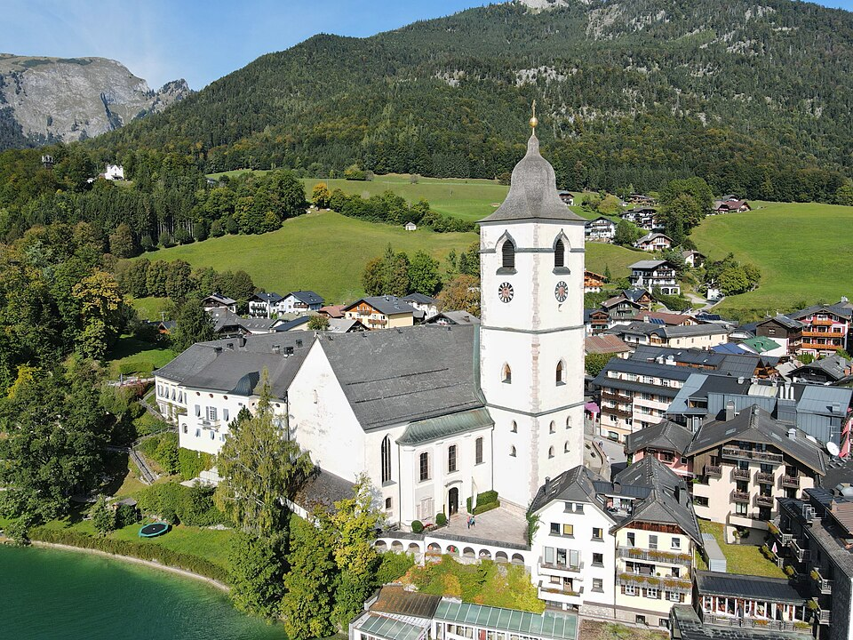 Photo from 2021-10-03 |
C.Stadler/Bwag | CC BY-SA 4.0 | File page |
| St. Wolfgang town (photo 3) | 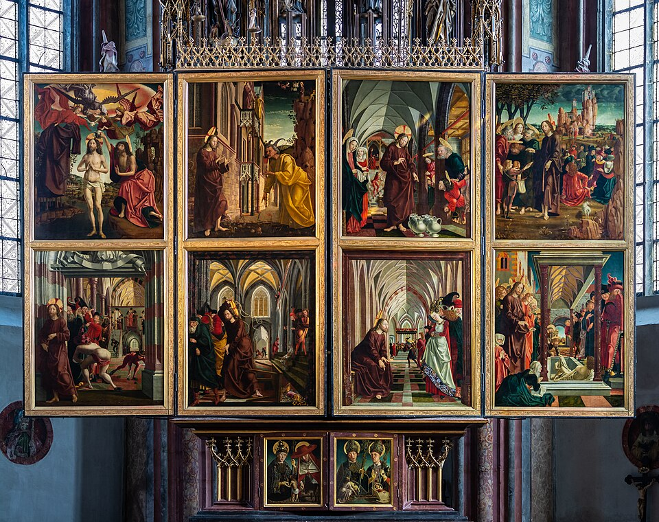 Photo from 2019-03-12 |
Uoaei1 | CC BY-SA 4.0 | File page |
| Stand25 Bisztró (below Castle Hill, classic Hungarian dishes) | External link | Unknown | Unknown | File page |
| Stephansdom (St. Stephen's Cathedral) |  Photo from 2026-07-21 |
Thomas Dahlstrøm Nielsen | CC BY 4.0 | File page |
| Stephansdom (St. Stephen's Cathedral) (photo 2) | 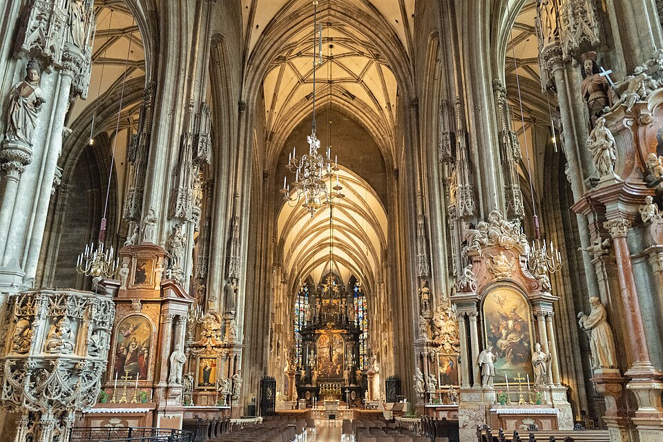 Photo from 2023-07-28 |
Giorgio Galeotti | CC BY-SA 4.0 | File page |
| Stephansdom (St. Stephen's Cathedral) (photo 3) | 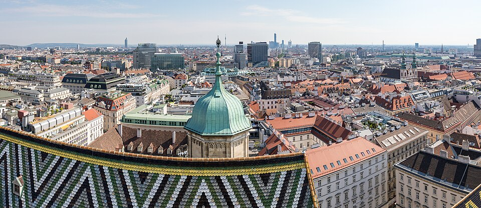 Photo from 2018-06-17 |
Dietmar Rabich | CC BY-SA 4.0 | File page |
| Liberty Square |  Photo from 2018 |
P. Hughes | CC BY 4.0 | File page |
| Széchenyi Baths |  Photo from 2022-04-13 |
Robot8A | CC BY-SA 4.0 | File page |
| Szimpla Kert ruin bar |  Photo from 2022-10-01 |
Random photos 1989 | CC0 | File page |
| Taste Asian (Chinese owner, foie gras, beef tongue) | External link | Unknown | Unknown | File page |
| Traun riverside walk (Bad Ischl town center) |  Photo from 2018-09-24 |
David McGregor | CC BY-SA 2.0 | File page |
| Trześniewski (open-faced mini sandwiches) |  Photo from 2024-08-01 |
Johannes Maximilian | CC BY-SA 4.0 | File page |
| Váci street and Ferenciek tere, Klotild Palaces (pedestrian street) |  Photo from 2026-04-01 |
Elekes Andor | CC BY 4.0 | File page |
| Votivkirche (the lit "∞" light sculpture between the two towers, which is the "church with the Möbius strip" the user mentioned) |  Photo from 2025-12-18 |
Linie29 | CC BY-SA 4.0 | File page |
| Votivkirche Museum (Antwerp Altar) |  Photo from 2018-05-17 |
Ricardalovesmonuments | CC BY-SA 3.0 | File page |
| Wolfgangsee boat (St. Wolfgang → St. Gilgen) |  Photo from 2019-10-01 |
Eweht | CC BY-SA 4.0 | File page |
| Zauner pastry shop |  Photo from 2018-09-02 |
Wikiadopter01 | CC BY-SA 4.0 | File page |
| Zwölferhorn cable car and summit loop |  Photo from 2021-07-29 |
Mateus2019 | CC BY-SA 3.0 | File page |
| Zwölferhorn cable car and summit loop (photo 2) | 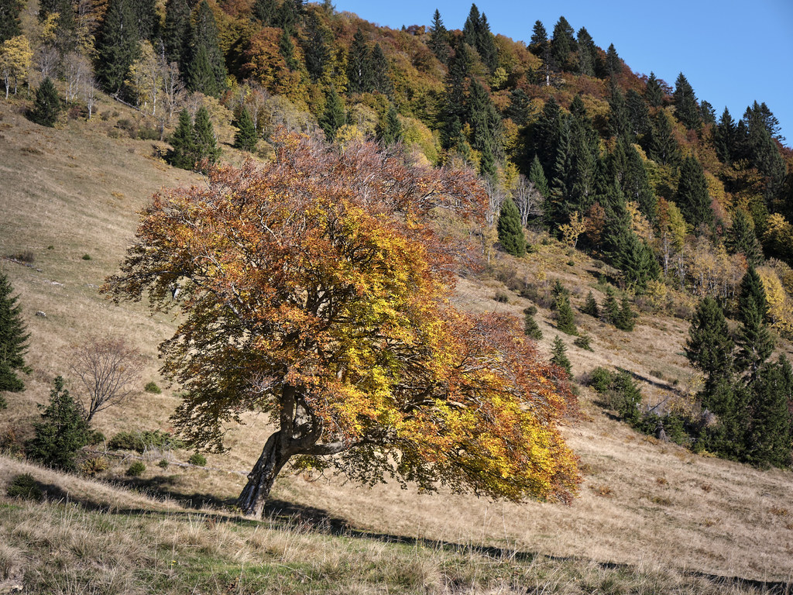 Photo from 2021-10-20 |
laijos | CC BY 4.0 | File page |
| Zwölferhorn cable car and summit loop (photo 3) | 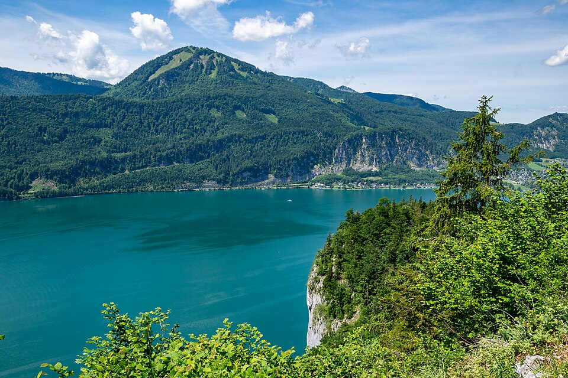 Photo from 2026-06-08 |
Tsungam | CC BY-SA 4.0 | File page |
| Zwölferhorn summit panoramic loop at Pillenstein |  Photo from 2018-05-02 |
Naval S | CC BY 2.0 | File page |
.JPG){kind=link}
.jpg){kind=link}
.jpg){kind=link}


.JPG){kind=link}


.jpg){kind=link}
.jpg){kind=link}
.jpg){kind=link}


_-_Flickr_-_Sandor_Somkuti.jpg){kind=link}
.jpg){kind=link}


.jpg){kind=link}


.jpg){kind=link}


.jpg){kind=link}
.jpg){kind=link}


.jpg){kind=link}
.jpg){kind=link}
.jpg){kind=link}


.JPG){kind=link}


_-_Flickr_-_Sandor_Somkuti.jpg){kind=link}


.jpg){kind=link}

.-014.jpg){kind=link}
.jpg){kind=link}


.jpg){kind=link}


.jpg){kind=link}
.jpg){kind=link}


.jpg){kind=link}

.JPG){kind=link}


,_Hauptaltar,_2024-10-17.jpg){kind=link}


.jpg){kind=link}


.jpg){kind=link}
.jpg){kind=link}